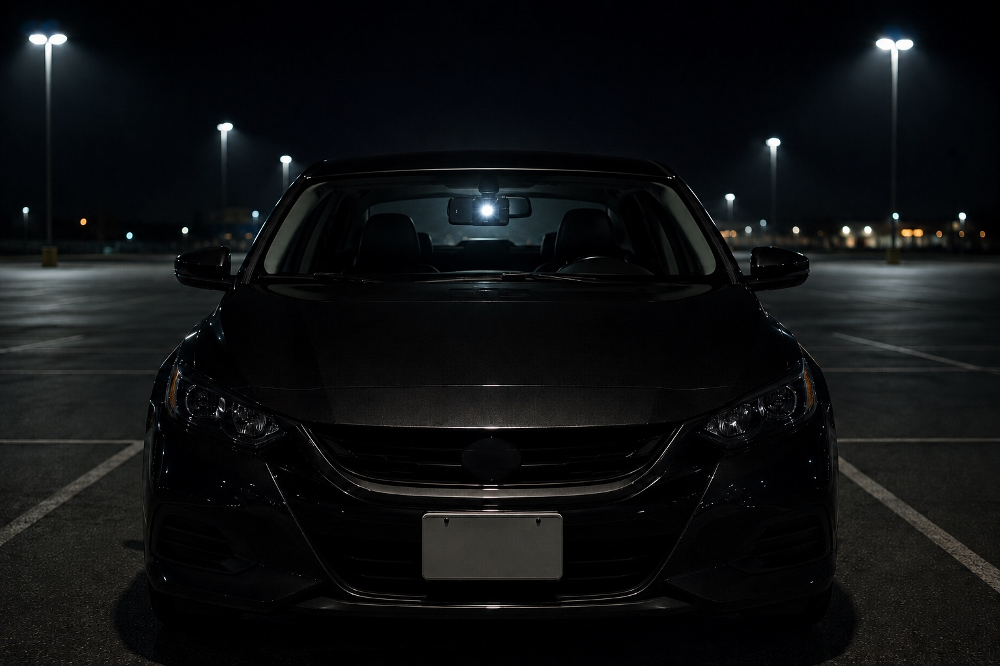
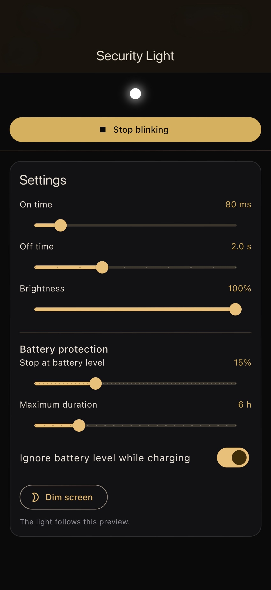
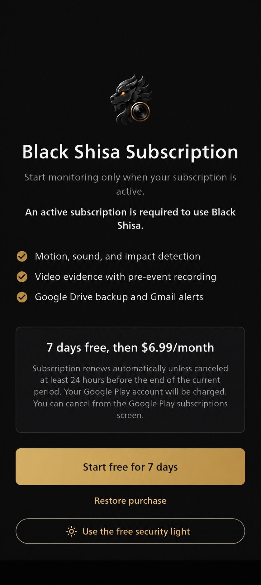

Abre Luz de seguridad gratis.
Úsala directamente desde la pantalla de suscripción o desde los ajustes de la app. No necesitas un plan de pago.

Función gratuita · No requiere suscripción
BlackShisa - Parking Dashcam App convierte el flash de tu teléfono en una luz intermitente ajustable para el coche aparcado, sin usar la cámara.
Ya disponible para Android. Versión para iPhone próximamente.
Una segunda vida útil
Fija un teléfono de repuesto de forma segura dentro del coche, orienta el flash trasero para que sea visible e inicia Luz de seguridad. La función trabaja por separado de las herramientas de vigilancia de pago de BlackShisa - Parking Dashcam App.

Configúrala en minutos
Los controles son deliberadamente sencillos para que un teléfono que ya tienes se convierta en una luz de seguridad visible para el coche sin hardware ni cableado adicional.
Úsala directamente desde la pantalla de suscripción o desde los ajustes de la app. No necesitas un plan de pago.
Configura cuánto tiempo permanece encendida, cuánto tiempo permanece apagada y, en dispositivos compatibles, el brillo.
Elige el nivel de batería para detenerla y la duración máxima. Durante la carga puedes ignorar el límite de batería y atenuar la pantalla.
Sin suscripción para la luz
Luz de seguridad es gratuita dentro de BlackShisa - Parking Dashcam App. La suscripción mensual desbloquea la detección de movimiento, sonido e impacto, el vídeo previo al evento, la copia en Google Drive y las alertas por Gmail.

Úsala con responsabilidad
Luz de seguridad está diseñada para ayudar a disuadir la atención no deseada. Su visibilidad depende del teléfono, la colocación, los cristales, la luz ambiental y el entorno. Fija el teléfono para que no interfiera con la conducción, evita dirigir la luz hacia otros conductores y respeta las normas locales.
Vuelve a poner en uso un teléfono de repuesto
Descarga BlackShisa - Parking Dashcam App y elige «Usar la luz de seguridad gratis».